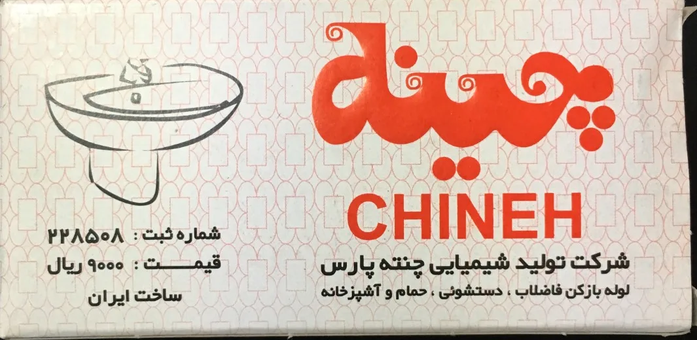

محصول شرکت تولید شیمیایی چنته پارس
آب دوباره روان میشود؛
با لوله بازکن چنته
برای گرفتگی سینک آشپزخانه، روشویی، کفشوی حمام و لوله فاضلاب. ساده، سریع و در دسترس.
- فاضلاب
- دستشویی
- حمام
- آشپزخانه

در سه قدم، بدون لولهکش
همیشه دستور روی بسته را دقیق اجرا کنید.
۱
آماده شوید
دستکش و عینک بزنید و محیط را تهویه کنید.
۲
طبق دستور بریزید
مقدار گفتهشده روی بسته را در دهانهی لوله بریزید.
۳
صبر کنید و آب ببندید
بعد از زمان گفتهشده، با آب فراوان مسیر را بشویید.
خرید عمده و نمایندگی۰۲۱-۳۳۹۷۳۹۴۸تهران، ناصرخسرو، پاساژ طوسی